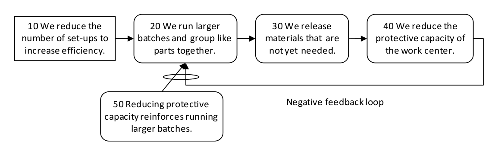

петля отрицательной обратной связи (negative feedback loop) - набор логических причинно-следственных связей, которые связаны таким образом, что вызывают уменьшающееся (отрицательное) состояние или поведение в системе.
Использование: петля отрицательной обратной связи всегда является усиливающей обратной связью и присутствует в системе, имеющей проблемы, которые ухудшаются, неуклонно ухудшаются. В общем, обратная связь включает как передачу, так и возврат информации. Поскольку петли обратной связи существуют во всех реальных системах, важно активно выявлять и записывать их в любом дереве текущей реальности как для правильной диагностики, так и для нарушения причинно-следственной связи в ряде мест, чтобы обеспечить улучшение будущего дерева реальности. Объекты в петле обратной связи являются хорошими кандидатами на точки воздействия.

(схема)
Иллюстрация:
Причинно-следственная связь возвращается с 40 до 20, потому что снижение защитной способности усиливает работу с большими партиями.
Син.: усиливающая петля.
См.: причина-следствие, дерево текущей реальности, петля обратной связи, дерево будущей реальности, точка рычага, петля положительной обратной связи.
Синоним: negative feedback loop